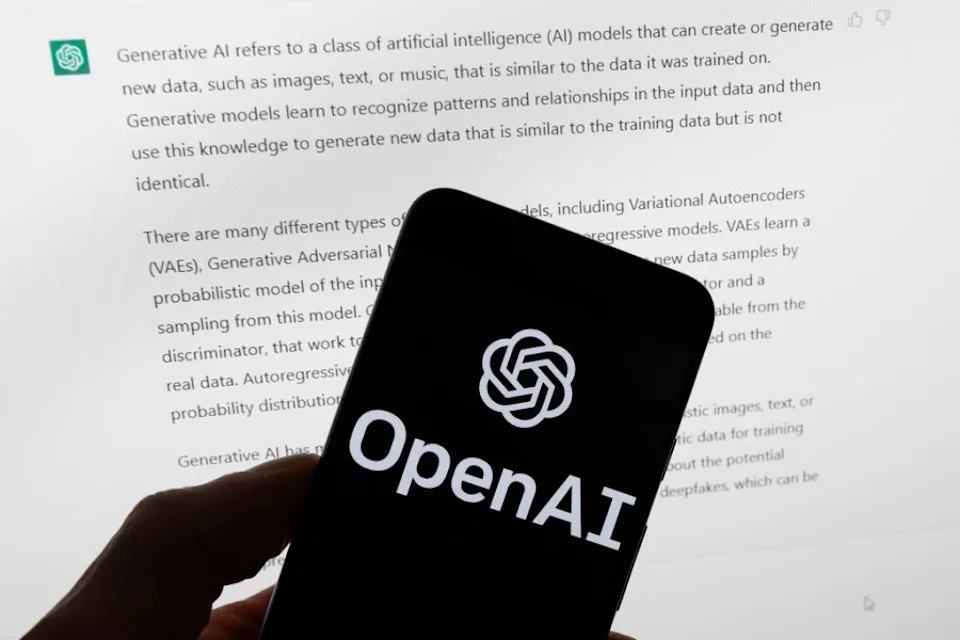
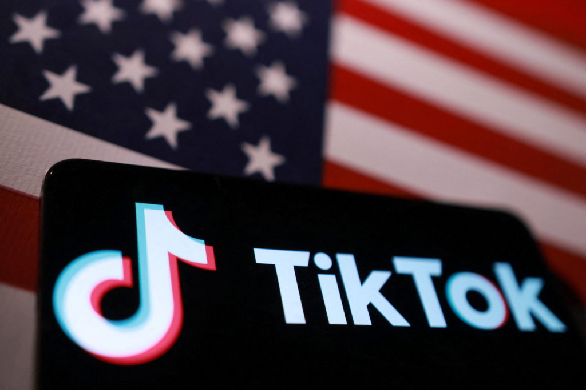
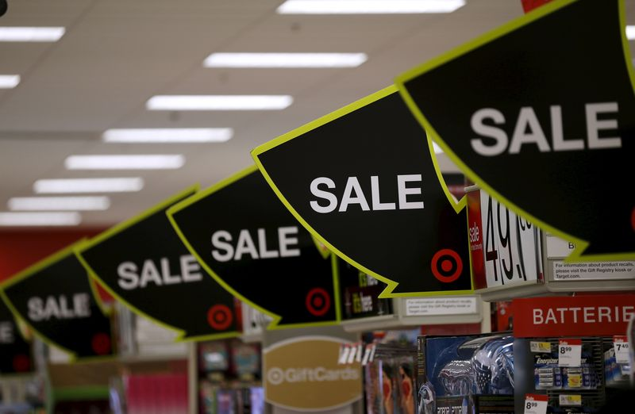

OpenAI Files Confidential IPO in the US as AI Race Intensifies With Anthropic


OpenAI has quietly filed for an initial public offering in the US, paving the way for one of the biggest moves in the artificial intelligence industry.
The move comes just days after rival Anthropic submitted confidential IPO paperwork, highlighting a rapidly intensifying race among the leading AI companies. OpenAI confirmed it had submitted a draft registration statement on Form S-1 to the U.S. Securities and Exchange Commission but did not disclose the size, valuation, or timing of the offering.
The confidential filing allows the company to move ahead when regulatory reviews are complete and market conditions are right.
The IPO reflects growing investor enthusiasm for artificial intelligence and comes after a period of rapid growth for OpenAI. ChatGPT has become one of the most widely used AI products in the world, drawing millions of users and generating substantial revenue. Analysts say the filing could reshape public-market perceptions of AI companies and set a benchmark for the sector's most influential players.
With Anthropic also preparing to go public, OpenAI's filing places it at the center of a closely watched contest to become the defining AI company of the decade.
Rapid Growth Drives Investor Attention
OpenAI's move to go public comes on the heels of extraordinary expansion. The company now generates roughly $2 billion in monthly revenue and serves more than 900 million users weekly. The widespread use of generative AI has turned OpenAI from a research lab into one of the most valuable technology companies in the world.
Investors have been paying close attention. AI is increasingly considered one of the most important sectors in technology markets, and OpenAI's growth story has attracted major investment from big-name tech firms and financial institutions. As the company unveils new models and services, hopes for a public-market debut have been building steadily.
The decision also highlights the vast capital required to compete in AI. Advanced systems require huge computing power, state-of-the-art hardware, and top-notch research talent. Analysts say OpenAI's IPO reflects its financial strength and is a necessity to stay at the forefront of a fast-moving field. This IPO could become one of the biggest technology listings in history if investor appetite remains strong.

Corporate Changes and Legal Challenges
The path for OpenAI to the public markets has been anything but smooth. Founded in 2015 as a nonprofit, the company pivoted to a for-profit model to raise capital for big AI endeavors. More recently, it rebranded as a public benefit corporation, trying to reconcile commercial objectives with its founding mission.
The moves faced lawsuits. Elon Musk sued, claiming OpenAI had strayed from its nonprofit mission. That lawsuit was dismissed in May, clearing a major obstacle to the IPO and giving investors more comfort. Other legal challenges remain, but the company has continued to build partnerships and commercial activities, showing confidence in its stability and readiness for public markets.
These changes mark a milestone in the evolution of the company from a research lab into a global technology powerhouse.
A Broader Wave of AI IPOs
OpenAI's confidential filing is part of a broader surge in AI-related IPOs reshaping technology and financial markets. Anthropic filed a week earlier, and more AI companies are expected to explore public listings soon. Analysts say these developments could redefine investor appetite, valuations, and the competitive structure of the industry.
Experts say OpenAI's IPO is not merely a response to Anthropic. The move provides the company with room for future financing and secures its foothold in AI infrastructure. Several analysts believe AI could be a sector as fundamental to the economy as cloud computing, semiconductors, or telecom. Others warn of the risk of several big listings stretching investment capital and turning off smaller tech firms seeking funding.
Despite these concerns, enthusiasm for AI remains robust. OpenAI's filing, alongside Anthropic's, underscores how quickly artificial intelligence companies are becoming central players in global capital markets. Whether OpenAI makes a public debut later this year or holds off for better market conditions, the filing marks a watershed moment in the commercialization of AI and the growing influence of AI companies on Wall Street.

Koepka’s Leap of Faith: What Comes Next After LIV Golf Exit
DECEMBER 24, 2025

Skenes and Skubal Win Cy Young Awards as Future Uncertainty Grows
NOVEMBER 12, 2025


Business

American investors and TikTok agree to open a new business in the U.S.
TikTok and U.S. investors have agreed to form a new American company, backed by Oracle and Silver Lake, to address national security concerns while keeping the app running in the United States.
BUSINESS BY DECEMBER 19, 2025

U.S. Retailers Expect Record Holiday Sales as NRF Forecasts First-Ever $1 Trillion Season
The National Retail Federation says that holiday sales will reach a record $1 trillion this year because eager shoppers are taking advantage of early discounts and strong consumer demand.
BUSINESS BY NOVEMBER 7, 2025
US Business PMI Hits 47-Month High in April 2026
The US manufacturing PMI rose to a 47-month high in April 2026, signaling a rebound in business activity despite ongoing inflationary pressures.
BUSINESS BY APRIL 24, 2026